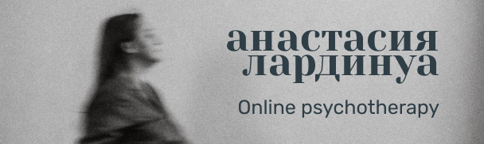
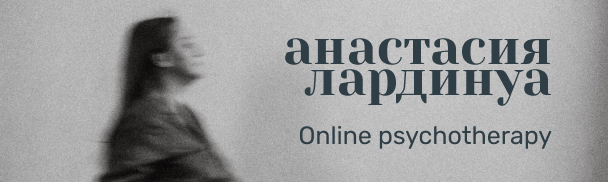
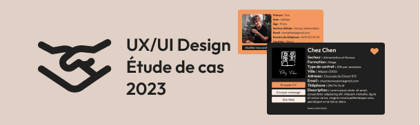
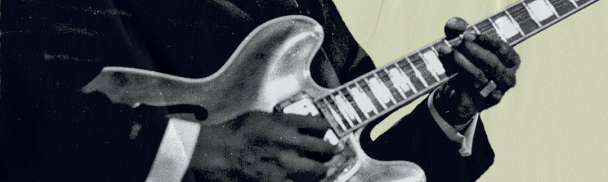
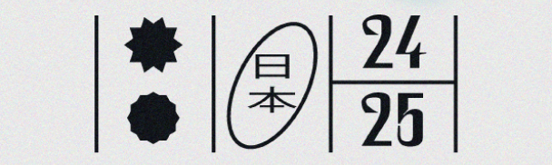

Création d'un site internet pour une psychothérapeute
Site Internet one page pour une cliente travaillant comme indépendante dans le domaine de la Gestalt-thérapie. Mon rôle : maquettage, codage et mise en ligne du site Internet.
Je m'appelle Benoît et je suis étudiant à l'IFAPME en tant qu'UX/UI Designer, mais pas que.
Passionné par tout ce qui touche au digital et au visuel, je pratique également la photographie, je crée des identités visuelles ainsi que des montages photo, en ayant toujours ces objectifs en tête : avoir le plus d'impact possible.
“Benoit a rejoint l'équipe WeBIngecie en tant que stagiaire designer UI/UX pour une période de 3 mois. Sa maturité, son autonomie et sa capacité de réflexion nous ont déjà surpris !”
Héloïse Alsteens Freelance webdesigner
“Benoit propose d'excellentes solutions créatives. L'attention aux détails rend ses projets utiles pour les utilisateurs"
Yevheniia Korshykova, Project Manager, FUIB
Former Benoit a été un vrai plaisir. Les travaux d'UX et d'UI fournis par Benoit était très intéressants et pertinents"
Joel parfait Kuate Formateur UX/UI Design à l'IFAPME de Dinant
Création d'un site internet pour une psychothérapeute
Site Internet one page pour une cliente travaillant comme indépendante dans le domaine de la Gestalt-thérapie. Mon rôle : maquettage, codage et mise en ligne du site Internet.
Amélioration de l'accessibilité de My Delhaize
Analyse des avis clients disponibles sur le web afin d'itérer sur l'app mobile. Itération sur 3 axes principaux : accessibilité, identité visuelle, ainsi que sur la recherche de produits.

Optimisation d'une plateforme d'apprentissage
Projet scolaire en groupe. Optimisation de l'UX ainsi que de l'UI d'une application mobile déjà existante, It's Learning, afin de la rendre plus attrayante pour les utilisateurs.

Landing page originale pour un restaurant italien fictif
Projet fictif, axé essentiellement sur le design UI afin de créer pour un restaurent italien une landing page avec une atmosphère appétissante. Création également d'un logo dans Adobe Illustrator.

Application mobile pour vous motiver à pratiquer un hobby
Projet fictif d'une application mobile permettant de gérer son temps afin de pratiquer un ou plusieurs hobbies. L'idée est de motiver les personnes à pratiquer une activité sur le long terme.

Itération de l'UX et de l'UI d'un site internet d'offres de stages
Projet scolaire visant à proposer une refonte de l'UX et de l'UI design pour un site Internet de recherche de stage déjà existant, StageFacile, tout en conservant la structure de base.
Identité visuelle pour un rhum jamaïcain, créé dans Illustrator
Projet scolaire fictif. Recherche, inspiration, croquis et réalisation d'un logo dans Adobe Illustrator.

Quelques projets réalisés avec Adobe Photoshop
Création de quelques affiches ; une grande partie de ces affiches a été réalisée dans Photoshop.
Quelques projets réalisés avec Adobe Illustrator
Créations de quelques affiches, une majeure partie de ces affiches a été réalisée dans Illustrator.
Formé à l'Institut Saint-Luc à Tournai en tant qu'opérateur en industrie graphique, j'ai eu l'opportunité de travailler sur des logiciels comme Photoshop, Illustrator et InDesign, ainsi que sur des presses offset. J'ai ensuite travaillé dans divers métiers manuels avec pour mot d'ordre : la rigueur. En 2018, j'ai eu la chance d'être indépendant en Biélorussie, où j'ai pu exprimer ma créativité, mon sens de l'organisation et ma débrouillardise.
Très soucieux du monde qui m'entoure et ayant toujours eu une certaine sensibilité visuelle et créative, j'ai pris la décision en 2023 de m'orienter vers l'UX/UI Design afin de pouvoir apprendre et appliquer ce qui me passionne tant depuis plusieurs années. Spoiler alert : j'adore ! Autodidacte complet et curieux de nature, j'ai une soif d'apprendre et d'innover sur divers projets.